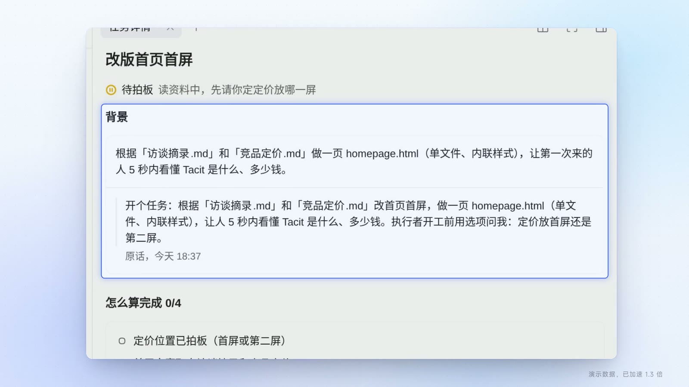
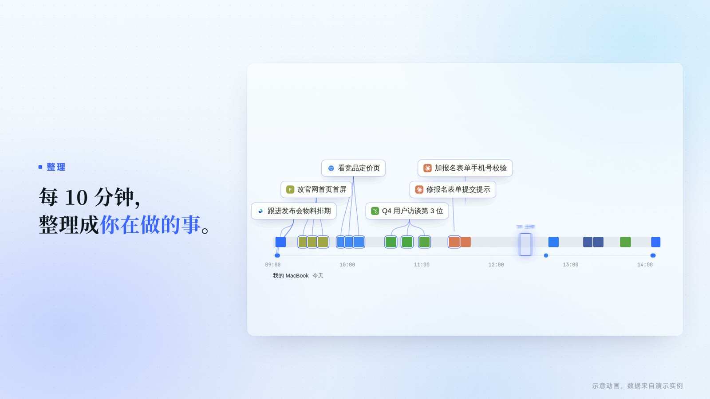

我的 AI 产品实践 · 长文
DS-buddy 是怎么想的：从多 agent 到上下文
短文只讲了结论。这一篇把依据摆出来：各家产品选了什么抽象，上下文在 agent 之间到底是怎么传的，DS-buddy 里每一条是怎么落的。
Hi 大家。这是那篇短文的长文版，思路一样，多了对比和截图。
最前面的问题：沟通的带宽
做 AI 应用产品，我觉得排在最前面的问题只有一个：降低人和 AI 沟通时要占的带宽。人说得越少越好，AI 还得把事办对。
今天这个带宽花在哪？大部分花在喂背景上：复制一段群聊，贴一个文件，解释一遍昨天做到哪。多 agent 的产品又加了一份：给 agent 起名字，配技能，盯着一屋子对话看谁卡住了。
我希望人只做五件事：说目标，指给它看，标注对错，舒服地观测，再把重复的摩擦降下来。下面每一个设计，都是在删掉这五件事以外的沟通。
为什么各家都先走向了 agent
因为我们习惯了通过人来组织上下文，习惯了各司其职。所以这一年的产品，摆到你面前的多半是「人」。
| 产品 | 摆在你面前的抽象 | 你要管的 |
|---|---|---|
| Raft、Multica、Claude Code Agent Teams | agent 是队友：有名字、身份、记忆和自己的收件箱 | 起名、配技能、看谁卡住了 |
| Manus Cue | 每个 agent 有自己的邮箱、电话和钱包 | 一支要带的团队 |
| Claude Code、Kimi Code、Codex | 一个主 agent，加一次性的子 agent | 把任务说全，等它汇总 |
| Manus Wide Research、Kimi Agent Swarm | 一个总指挥，加几百个分身 | 一次一个问题 |
| Genspark、Cursor 2.0 | 同一件事，几个模型各做一遍 | 挑模型，挑结果 |
| OpenClaw、OpenHuman、ChatGPT Pulse | 一个一直在的助理 | 一段越来越长的对话 |
| dsh-superagent | 工单和一块面板，会话完全藏起来 | 只看面板 |
但对 AI 来说，干活需要的只有两样东西：上下文和模型。一个 agent 拆开看，就是一部分上下文加一部分模型。我自己的代码里也是这样：一个「助理」只有三样东西，名字、一段人设、默认用哪个模型，会话是按任务开的。
把它再包装成一个有名字的角色，是多出来的一层抽象。下面按五种组织方式，看各家是怎么做的。
角色团队
代表：Multica、Raft、Claude Code Agent Teams、DS Bot、Manus Cue。
做法：Multica 把 agent 当成队友，有个人档案，在看板上领 issue、报阻塞，还能编成小队。Raft 说得最直接，agent 是一等公民，有记忆、有身份、有自己的收件箱，在频道里 @ 队友、认领任务。Claude Code 的 Agent Teams 里每个队友是一个独立实例，靠磁盘上的共享任务清单和互发消息来协调。Manus Cue 给每个 agent 配了自己的邮箱、电话和钱包。DS Bot 和 DS-buddy 一样建在 DeepSeek Harness 上，有一个总管 bot，bot 之间可以 @ 接力。
观点：这一派最直观，代价落在人身上。组织单位是 agent 和对话，谁在做什么、谁卡住了、一件事做到哪了，要去对应的对话里翻。agent 越像人，你就越像一个经理。
总指挥加分身
代表：Anthropic 的研究系统、Manus Wide Research、Kimi Agent Swarm，以及 Codex 和 Claude Code 的子代理。
做法：Anthropic 的研究系统用一个主 agent 带一群并行的子 agent，内部评测比单 agent 好 90.2%，代价是 token 用量大约是普通聊天的 15 倍。Manus 的 Wide Research 一次派出几百个分身，每个拿一份全新的上下文；它自己也写明，不适合前后步骤强依赖的任务。Kimi 的 Agent Swarm 专门训练了总指挥，最多调度 300 个子 agent。
观点：我觉得这一派是对的。它解决的是同时处理很多条互不相干的东西，比如调研一百家公司。前后有依赖、要做好几天的事，它帮不上太多，做完之后也什么都不记得。
并行比稿
代表：Genspark、Cursor 2.0。
做法：Genspark 把同一件事交给多个模型，再由聚合器汇总。Cursor 2.0 让多个 agent 各在自己的工作副本里并行，同一个任务可以让几个模型各做一遍，你挑最好的。
观点：到这一步，已经没人关心 agent 叫什么了。你关心的只是用了哪个模型、结果靠不靠谱。这其实已经在说明，角色那一层可以拿掉。
常驻助理
代表：OpenClaw、OpenHuman、ChatGPT Pulse。
做法：OpenClaw 常驻在你的机器上，性格、规则和记忆都是工作区里的文本文件，还会定时自己醒来。OpenHuman 接了一百多个应用，每一轮按 token 预算挑出相关的内容，并附上出处。ChatGPT Pulse 在夜里分析你的聊天记录和连上的邮箱、日历，早上给你几张卡片。
观点：它们把「上下文自己进来」做得很用力，这也是我最认同的方向。但组织方式多半还是一段对话或一叠卡片。一件要跑好几天、分成好几块的事，在对话里很难看清做到了哪。
监督面板
代表：dsh-superagent，DeepSeek 开源的研究原型。
做法：事情从 GitHub 或飞书进来，经过把关和研判，变成一张带授权范围的工单，再派给一个执行会话。会话完全藏起来，人只看一块面板。它的原则写得很直白：尽量少占用人的注意力。
观点：这是和我想法最接近的一派，会话应该是实现细节。区别在服务对象：它服务的是一个团队和一个代码仓库，DS-buddy 服务的是一个人，和他手上的很多个项目。
这层抽象带来的误解和翻车
- 转述丢东西。Cognition 在 2025 年 6 月的 Don't Build Multi-Agents 里举过一个例子：做 Flappy Bird，把背景和小鸟分给两个子 agent，两边互相看不到，结果背景像马里奥，小鸟也不像 Flappy Bird。
- agent 之间的话，被当成你的话。助理越多，越容易出现假传授权。所以几家都在给消息标来源：Agent Teams 标注「来自另一个 Claude 会话」，Multica 区分「代表谁」和「凭谁的权限」。
- 抢同一件事。没有一家只靠提示词来防重复：Agent Teams 用文件锁，Multica 用数据库按（issue，agent）串行化。
- 贵。上面那个 15 倍的 token 用量，就是多开窗口的价钱。
2026 年 4 月 Cognition 又写了一篇，结论收窄成一句话：多出来的 agent 可以贡献判断，写入要保持单线程。agent 之间任意互相通信的 swarm，他们的评价是大多在分散精力。
fork 为什么多数时候更好用
fork 其实就是共享上下文，把已经知道的原样带过去。多 agent 之间靠转述，上下文在传递的过程里会丢。
这一点有源码可查。有一份对 8 个开源多 agent 项目源码的拆解（2026 年 7 月到 10 月的主分支，Claude Code 不开源，按官方文档），结论很一致：没有哪个项目共享上下文窗口。差别只在三件事上：子 agent 继承多少父历史，父 agent 写的任务说明长什么样，结果以什么形状回来。
去程，子 agent 看到什么：
| 项目 | 子 agent 看到什么 |
|---|---|
| Claude Code subagent（默认） | 自己的系统提示、环境信息、CLAUDE.md，加主 agent 写的一段委派消息。看不到父对话、已读文件 |
| Claude Code fork | 父的完整对话。用在「要全部背景、又不想污染主窗口」的时候 |
| Kimi CLI | 只有 prompt，加它自己的历史。系统提示里明说「主 agent 看不到你的上下文，只看得到你最后一条消息」 |
| Gemini CLI | 本地子 agent 只有任务说明，要求「必须带上用户的原始目标」；调远程 agent 只带 contextId 和 taskId |
| Codex | spawn_agent 只给任务；fork 时保留用户消息和最终答复，丢掉推理和工具往返 |
| OpenAI Agents SDK handoff | 默认整段对话历史，可以过滤，也可以先压成一段摘要再交过去 |
| LangGraph、AutoGen | 读写同一份 state，或者所有人共享一条消息线 |
| CrewAI | 只拿到上游任务的输出。它的提示里写着「对方对这件事一无所知」 |
回程，父 agent 拿到什么：
| 项目 | 父拿到什么 | 兜底 |
|---|---|---|
| Gemini CLI | complete_task 的 JSON 报告，按 schema 校验 | 超时或超轮次给一次宽限轮，只许交结果 |
| Kimi CLI | 最后一条消息的文本 | 少于 200 字符自动追问一次 |
| Codex | 最终答复，经等待或完成通知回来 | 运行中可以续发消息、追加任务、打断 |
| Claude Code | 最终消息；后台任务以通知形式回来 | 可以续接，保留子 agent 自己的历史 |
| LangGraph Supervisor | 默认只留最后一条 | 可切到完整历史 |
| OpenAI Agents SDK handoff | 不回传，控制权直接转移 | 过滤或压缩历史 |
| AutoGen | 发言直接进入共享消息线 | 可换成有界的上下文 |
观点：默认的做法是只给一段说明，只收最后一条。任务说明写得怎么样，上下文就传得怎么样，几家的提示词都在要求父 agent「写全」。fork 是例外：Claude Code 和 Codex 都留了 fork 模式，用在需要全部背景的时候。Cognition 总结出来真正管用的几种做法里，也有一条是把完整上下文 fork 一份，去请教更强的模型。
但 fork 解决不了主对话变长
fork 把全部背景带过去，代价是窗口一起步就很大，也贵。主对话还在一直变长，长到一定程度只能压缩，压缩是有损的，细节会丢。上下文太长，模型也会变糊涂。
所以我觉得，最好的上下文方案一定是一开始就有意识地设计出来的，靠对话一路聊下去是长不出来的。多 agent 这件事的本质，是给 AI 造一个管理 context 的好环境，围绕任务本身来组织上下文。
一开始就设计：人说三件事，AI 来拆
往哪个方向搭？我觉得不该是让人来控制：组建频道，拉群，@ 谁。人只需要讲清楚三件事：要做什么，上下文在哪，标准是什么。
要做什么。在项目里说一句目标。这一次我说的是：下周四发布，做邀请函，再写媒体问答、口号和新闻稿，口号用中文还是英文，开工前先问我。它开了两个任务同时开工，口号那件没有开，先回来问我。

上下文在哪。用 @ 指给它看：项目，文件，或者另一段对话。每个任务的产出都放在项目共享文件里，别的任务直接读，不用我转述。

标准是什么。每个任务有一栏「怎么算完成」。做完了交到我面前，只有我点了验收，这件事才算完。助理不能替我说「完成了」。

然后由 AI 把它拆成一个个任务（thread），每个任务带一份上下文包。可以粗略理解成一份 goal 文件。
任务详情，就是这份上下文包给人看的样子：


真正要长期维护的是它。落在产品里是这几条：
- 你的原话逐字带进去。项目助理开任务时引用你那句话，服务端原样带给执行者，不经转述。助理补充的内容另外标出来，不算你的要求。
- 有进展就写回去。交付、提问、失败都记在任务上。状态跟着事走，不跟着会话走。
- 只放用得上的。大的材料放在项目共享文件里，只给路径。记忆和时间线只取和这件事有关的那一段，每条带出处。
- 确定的判断交给代码。谁的话算授权，引文在不在原消息里，同一件事是不是提过两次，由代码核对。模型只做理解。
agent 都是 tool，runtime 随时可以重来
至于那些临时干活的 agent，其实都是 tool。它们的状态很脆弱，也不太需要维护：就是一个 runtime，每次把上下文重新注入就好。
在 DS-buddy 里，任务默认由 DeepSeek Harness 里的一个会话执行，也可以在任务里换成 Claude Code 或 Codex。换的时候，新的执行者拿到的是任务上的那份记录，你看到的东西不变。同一件事会续接同一个会话，换一件事才开新的。
这里当然还有不少细节：每个 agent 启动时是不是一个全新的 context，怎么围绕缓存去省 token。别家在这上面下了不少功夫。Multica 把固定的说明放在前面，每次运行的信息追加在末尾。Raft 在一次线上读数里发现，2860 万提示 token 有 2710 万没命中缓存，之后改成每个会话冻结系统提示，变化只发增量通知。
我不确定 DS-buddy 现在的设计是不是最好的。但这些不该是用户感知得到的细节。
现在的产品暴露得太多了
Multica 和 Raft 都给出了一层很好的抽象。Multica 用工单：agent 在看板上领 issue，结果写在评论里。Raft 用群聊：agent 待在频道里，被 @ 到就去读，也会自己认领任务。这确实是好的组织方式，结果落在共享的记录上，人和别的 agent 都看得到。
但还不够省事。频道要人来建，issue 要人来开，谁做哪件要人来 @。对人来说，搭 context、做分工，本身就是一件费力的事。理想的状态是 AI 自己把这一层做完。
| 架构 | 上下文怎么进来 | 按什么组织 | 人要管什么 | 怎么知道该你了 |
|---|---|---|---|---|
| 角色团队 | 你来喂 | 看板或群聊 | 起名、配技能、盯进度 | 有的有收件箱 |
| 总指挥加分身 | 每次从头给 | 一次一个问题 | 分身看不见 | 只有最后的答案 |
| 并行比稿 | 每次从头给 | 一次一个问题 | 只挑模型 | 你来挑结果 |
| 常驻助理 | 消息、应用、文件 | 一段对话 | 有的要写规则文件 | 卡片或定时提醒 |
| 监督面板 | 代码仓库和群消息 | 工单 | 只有工单 | 面板 |
| DS-buddy | 屏幕、飞书、文件、你的话 | 项目和任务 | 没有名字，不用配 | 待你决定 |
这张表是按各家公开资料的读法，标的是一类做法，不是给某个产品打分。
最重要的设计：上下文的收集
AI 要自己做得了分工这一层，前提是摄入了足够多你的 context。这正是 Multica 和 Raft 现在缺的：划分项目和任务的还是人。所以 DS-buddy 里最重要的一个设计，是上下文的收集。


它是这样来的：
- 屏幕上的应用、窗口标题和文字，每分钟读一次；飞书消息每 2 分钟读一次。全部只读，截图留在你的电脑上。
- 每 10 分钟切成一窗，连同上一段在做什么、你有哪些项目，一起交给一次小模型调用。
- 模型写出 0 到 3 件事，用你自己的任务说法，再归到对应的项目。
- 代码核对出处：每件事必须指回这一窗里的原始记录，指不回去的直接丢掉。

两条边界：
- 观察到的信息是数据，不自动变成你的授权。屏幕和消息里出现的任何要求，都只当资料，不当指令。
- 不把所有东西不断拼进窗口。原始记录进存储，模型只取和这件事有关的那一段。
电脑里的文件走另一条路：你电脑上的一个小程序主动连过来，读哪些文件夹由你的电脑决定。
你只管拍板
事情并行跑起来，最难的是看不过来。「待你决定」是一块跨项目的看板，只列需要你的：等你拍板的，等你验收的，出了错的，还有别人在等你回的消息。

- 卡片上没有按钮。点任务卡打开任务；点提醒卡，一句话写进输入框，你改完再发。
- 个人助理不进项目干活，它跨任务看。夜里电脑空闲时把这一天过一遍，早上最多留三张卡：一件可以做的，一样值得看的，一句想说的，每张写明出处。
- 做完没有，和它还在不在跑，是两件事。排队不能冒充正在执行，一个回合结束也不等于这件事解决了。只有你点了验收才算完成。
Tacit：默会
里面那个助理，默认的名字叫 Tacit，取的是「默会」的意思，心领神会。我觉得一个真正好的 buddy，应该在你开口之前，就已经了解和这件事有关的一切。

- 「关于你」只记你亲口说过的话，每条附着原话，代码核对确实出自你。记得不准就改，不想要的直接忘掉。
- 技能不用你配。同一个问题你在交付后说了三次，夜里它起草一版新的「做事说明」，只改怎么做，不加权限；早上由你选用新版、先试一次，还是保持旧版。
- 它不以你的名义行事。没有你的一句话，不拍板、不验收，也不替你发消息。飞书和电脑文件夹都是只读，而且只读你允许的。
还没做好的
- 反馈现在主要还靠人。哪些环节能交给自动检查，我还在试。
- 时间线的整理不总是对。相邻几段容易被前一段带偏，写成同一件事；原始记录还在，但要靠你发现。
- 换执行者只在一轮做完之后生效，跑到一半怎么交接还没有好答案。Codex 当执行者，还没有验证到它跑完一个完整任务。
- 每个 agent 启动时的上下文怎么组织、缓存怎么用，我不确定现在是不是最好的。
- 上下文越多越要防污染。给每条信息标来源是第一步，够不够要看更多真实使用。
开始用
DS-buddy 是 DeepSeek Harness 的一个开源插件，需要 DeepSeek Harness 0.2.x 和 Node 24。装好后左侧会多出「个人助理」和「项目」，模型跟着你的 DeepSeek Harness 配置走。新建一个项目，说第一句目标就行。读屏幕和电脑文件需要在你的 Mac 上另装一个小程序，不装也能用项目和任务。
代码在 github.com/DKKD13/tacit-dsh。

文中配图：带演示片字幕的几张取自演示片，界面是真实的，数据是演示用的，标了「示意动画」的那张是画的；其余截图来自一次全新安装的真实运行。